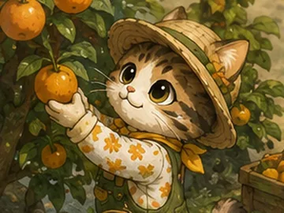
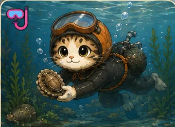
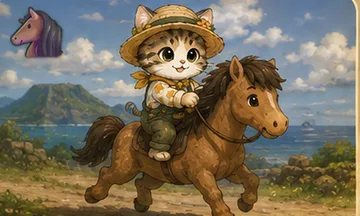
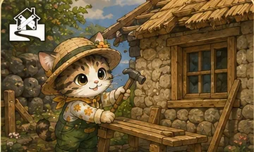

루루냥의 제주살이
이동 ← ↑ ↓ → (방향키)
시야 회전 A D (올려보기 W S)
줌 Z 멀리 / X 가까이
달리기 Shift
점프 Space
상호작용 F (구입은 마우스로 · 창 나가기는 ESC)
물속에서 F 채집 · ↑ 떠오르기 · ↓ 잠수 · ←→ 헤엄 · 수면에서 F 나가기
전체 지도 M (또는 🗺 배지)
왼쪽 아래 🎒 자산 · 🗺 지도 · 🎵 음악
오른쪽 위 ⏭ 다음 곡 · ↻ 새로 시작 · 💾 저장
시야 회전 A D (올려보기 W S)
줌 Z 멀리 / X 가까이
달리기 Shift
점프 Space
상호작용 F (구입은 마우스로 · 창 나가기는 ESC)
물속에서 F 채집 · ↑ 떠오르기 · ↓ 잠수 · ←→ 헤엄 · 수면에서 F 나가기
전체 지도 M (또는 🗺 배지)
왼쪽 아래 🎒 자산 · 🗺 지도 · 🎵 음악
오른쪽 위 ⏭ 다음 곡 · ↻ 새로 시작 · 💾 저장
💵 0원
🗓 1일차 · 오전 9:00
Oreum Games
M 키나 화면을 누르면 닫힙니다
욕심내민 바당이 데려간다
DIE
누르면 다음
관광지라 물가가 비싸구나 ㅠㅠ
경주 준비 중…
숨
🥕 당근 0개
🧺 망사리 0/24
📦 상자 0/20
📦 상자에 가까이 가면 F로 잡을 수 있어요
루루냥의 🐾 제주살이
서울 집값에 밀려 제주로 온 고양이낡은 빈집에서 시작하는 두 번째 인생
🍊

농사짓기
🤿

해녀 물질
🐴

조랑말 경마
🏚

헌집 고치기
💕

그리고 설레는 사랑 💕
방향키루루 이동
A D · W S시야 돌리기 · 올려보기
Z X줌
F모든 상호작용 (따기·사기·상자·물질…)
M전체 지도
Shift · Space달리기 · 점프
왼쪽 화면끌면 루루가 걸어갑니다
오른쪽 화면끌면 시야가 돌아갑니다
두 손가락벌리고 오므리면 줌
행동 버튼모든 상호작용 (따기·사기·상자·물질…)
🗺 배지전체 지도
🎵 배지누르면 배경음악 꺼짐
🐾시작하기🐾
⛶ 전체화면으로 보기
Oreum Games
🐾행동
💨달리기
⤴점프
지금은 루루 그림과 성산일출봉 그림이 안 보이는 상태입니다.
브라우저 보안 규칙 때문에, html 파일을 그냥 더블클릭하면 그림 파일을 화면에 입힐 수 없습니다.
폴더에 있는 「루루3D실행.bat」을 더블클릭해서 열어주세요.
(작은 서버를 켜고 같은 화면을 여는 것뿐이라 하시던 대로 하시면 됩니다)
브라우저 보안 규칙 때문에, html 파일을 그냥 더블클릭하면 그림 파일을 화면에 입힐 수 없습니다.
폴더에 있는 「루루3D실행.bat」을 더블클릭해서 열어주세요.
(작은 서버를 켜고 같은 화면을 여는 것뿐이라 하시던 대로 하시면 됩니다)